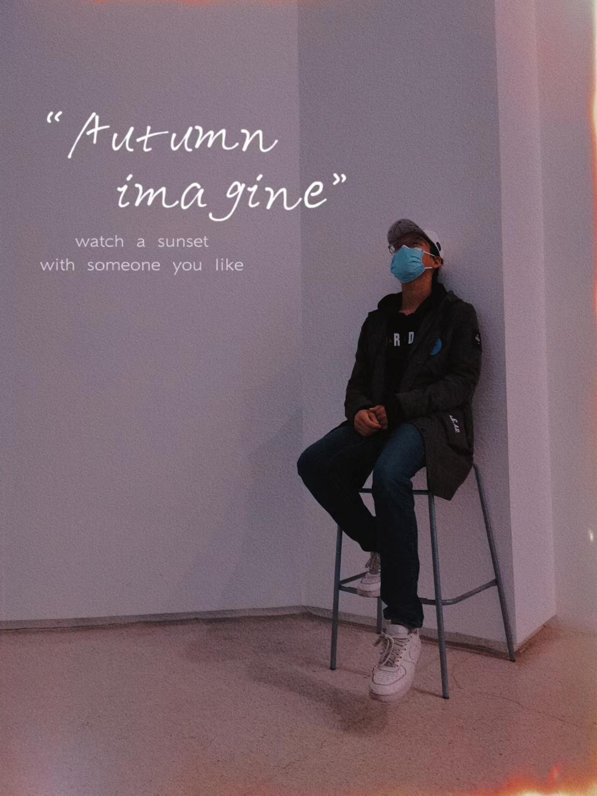

|
Logan Zou
I am an undergraduate student in University of International Business and Economics, School of Information Technology and Management, majoring in Data Science and Big Data Technology.
I am a constant learner and explorer, enthusiastic about participating in open-source projects related to NLP and LLM.
I have show my open-source and academic interests as follow.
If you are interested in my experiences and you have any things or questions to discuss ,do not hesitate to contact me.
Email /
CV /
Github
|

|
Research Interests
My research interests lie in natural language processing and large language models.
I am currently a master's student at the University of International Business and Economics,
supervised by Professor Dongyuan Lu.
My research focuses on comparative analysis of industry economic texts based on multilingual large language models.
Large language models are my prospective research direction.
I have a strong interest in fine-tuning LLM for specific domains,
prompt engineering, dialogue strategies, personalized evaluation, application development, and other aspects related to LLM.
I have been actively involved in various open-source projects related to LLM and have gained some experience.
I am actively seeking an internship opportunity related to large language models.
If there is a need, please feel free to contact me at any time.
|
LLM Tutorial for Developers
project webpage
Principal and main contributer
An introductory tutorial on Large Language Models (LLMs) for developers,
based on the course content from Professor Andrew Ng's series on LLMs.
This tutorial translates the original course content into Chinese,
reproduces its example code, implements Chinese prompts, and explores multilingual contextual prompts for large models.
It aims to guide Chinese developers on how to rapidly and efficiently develop powerful applications based on LLMs.
6.9k stars, 827 forks
Thorough Pytorch
project webpage
Main contributer, responsible for NLP and Transformer-related content.
An open-source Chinese tutorial of Pytorch
that comprehensively covers the usage of PyTorch from theory to practice,
emphasizing practicality, readability, and extensibility.
It has received support from the Computer Department of People's Posts and Telecommunications Press
and the MMYOLO open-source algorithm library from Shanghai Pudong AI Laboratory.
1.4K stars, 299 forks
Huanhuan-Chat
project webpage
One of Principals and main contributer
Huanhuan-Chat is a chatbot based on LLM that mimics the tone and language style of Zhenhuan,
a character from the TV series "Empresses in the Palace,".
It is fine-tuned based on ChatGLM2 using LoRA.
The current released version 2.0 creates a personalized AI model based on novels and scripts,
offering a complete process for fine-tuning AI models.
By running the entire project process and providing any novel,
users can create a highly intelligent personalized AI that aligns with their preferred novel or script
and matches the character's personality.
167 stars, 15 forks
LLM Universe
project webpage
Principal and main contributer
A concise and comprehensive tutorial on LLM development
goals at providing a focused introduction to LLM development through a half-day course.
This tutorial starts from personal knowledge assistant projects.
breaks down the general process and steps of LLM development in a clear and easy-to-understand manner.
Additionally, we have planned and encapsulated the project in a clear and comprehensive manner,
achieving the unified integration of different LLM APIs into the project.
10 stars, 3 forks
D2l-ai Solutions Manual
project webpage
Main contributer, responsible for Computational Performance and Optimization Algorithms.
"Dive into Deep Learning" by Li Mu is a classic book for beginners in deep learning.
This project provides solutions to the exercises in "Dive into Deep Learning",
including theoretical derivations and code implementations.
It serves as a workbook for the exercises in the book,
helping beginners to quickly understand the content.
116 stars, 20 forks
AIGC Developer Collaborative Community
project webpage
Main contributer, responsible for LLM-related content.
An AIGC collaborative platform built by Datawhale members,
intended for recruiting team members for the Datawhale LLM Application Development.
The goal is to establish a collaborative community that encourages each other and explores together,
connecting like-minded souls, allowing our wisdom to bloom through mutual interactions.
112 users, 14 projects
|
A Neural-Ensemble Learning Method for Migration Prediction Based on Culinary Taste Data in China
Accepted by SCI Journal of Nonlinear and Convex Analysis
Authors: Zou Yuheng, Huang Yicheng, Yan Chengxin, La Lei
Abstract: Population migration is an important problem related to national
economic and social development, and migration data can be applied to research
in many fields. But population loss often puts huge pressure on local governments,
so migration data are not disclosed in many cases. Most of the existing migration
prediction models are based on non open source data, when other researchers
want to apply existing population migration prediction models to carry out their
own prediction tasks, they often find that they cannot obtain the same data
source. This paper proposes a Neural-Ensemble learning method for migration
prediction based on taste data in China. The whole method can be divided
into three parts. First, classify the restaurants into different cuisines, calculate
the taste of each cuisine based on the recipe data and then obtain the taste
matrix of China. In this step, we propose a method for restaurant classification
called Neural-Ensemble Classification, which combines the BERT and dictionary
matching. Then we construct a Markov Chain to predict the vector of migration
at the same time with restaurant data based on the historical migration data.
Finally, we build a prediction model based on the LightGBM, which uses the
taste matrix as input and the vector of migration as output. Compared with
existing models, this model can use open data to achieve the prediction accuracy
no lower than existing models.
A Comparative Study of China And the United States' Digital Economy Policies Based on Cross-lingual Mode
Accepted by Chinese Core Conference SMP 2023
Authors: Zou Yuheng, Lu Dongyuan
Abstract: In the context of escalating Sino-American strategic competition, a comparative study of Chinese and the USA
digital economy policies bears significant strategic value. Traditional methods of policy comparison are limited by cost, can ’t
solve this problem well. This paper focuses on the contrast between digital economy policies in China and th e USA, proposing
a resolution framework based on a cross-language model. This framework enables the comparison of digital economy policy
environments in both countries based on massive policy data and further suggests policy recommendations for the develop ment
of the digital economy. This paper offers a solution for comparing policy environments across different political systems,
providing a comprehensive and objective portrayal of the disparities in digital economy policy environments. Concurrently, it
also brings a fresh perspective to policy comparison research.
Why Guests Write Negative Comments for Budget Hotels：Research Based on Aspect Extraction
Accepted by SCI Journal of Nonlinear and Convex Analysis
Authors: La Juanjuan, La Lei, Zou Yuheng
Abstract: Negative comments reflect customer dissatisfaction. Identifying this
dissatisfaction is of high significance to improve the hotel industry. At present,
the mining of negative comments mainly focuses on luxury hotels. In fact, budget
hotels occupy a large market share. This paper proposes a method for online
comment extraction in the hotel field. The method realizes weakly-supervised
learning based on BiLSTM and CRF and can further improve the extraction
performance by using a labeled open dataset in the hotel domain. The real-world
application of the proposed method reveals the dissatisfaction of economy hotel
customers mainly focuses on the price, noise, service, and cleanliness of facilities.
Experimental results also show that the proposed method has a higher F1 score
in the supervised and weakly-supervised situations than the control methods. It
is a powerful tool for managers and researchers in the hospitality industry and
can support many downstream applications.
|
LLM Algorithm Intern - Ytell
Ytell is a tech innovation company centered AI and LLM technology,
whose core members come from major internet and AI tech companies such as Baidu, Didi, Alibaba, and Fourth Paradigm.
Responsible for exploring solutions related to LLMs, application implementation, and iterative optimization:
- Open-source LLM domain-specific fine-tuning,
involving workflows for multimodal data processing, efficient instruction-tuning, and constructing evaluation metric system for domain-specific LLM.
- Business problem solutions and implementation based on LLM,
including automatic order extraction, high-quality manuscript generation, intelligent assistance for user operations, etc.
- Development of a health-related question-answering assistant based on the Agent mechanism,
primarily responsible for framework ideas, data construction, model optimization, performance testing, and evaluation.
Algorithm Intern - Dr.Peng
Dr. Peng is a publicly listed group focused on the communication and internet industry,
possessing a nationwide comprehensive business operation license.
Responsible for the design and implementation of quantitative algorithms, and the construction of financial data analysis platforms:
- Implementation quantitative strategies with Python,
enabling the transformation from formal language to program descriptions.
- Developing a module for quantitative stock trading,
incorporating price segmentation based on MACD, defining price trends for quantification and so on.
- Establishing a financial data visualization platform,
involving the design of the local database structure, writing functions for remote data migration, and creating data API documentation.
Data Analysis Intern - Erawork
Erawork is a technology-driven shared workspace and office operation platform utilizing AI and big data.
Responsible for user data analysis,
including utilizing various web scraping techniques to obtain user data from the Geek platform,
leveraging the user data to create user profiles, filter out inactive users, and visualize relationship networks.
|
Top 3 - Competition of Text Classification and Keyword Extraction Based on Paper Abstracts
Organized by iFLYTEK
For the tasks of text classification and keyword extraction,
we proposed a solution algorithm combining 6B fine-tuned LLM with GPT-4 supervision, achieving Top 3 in the preliminary round and Top 1 in the long-term competition.
Top 3 - Competition of Job-Seeker Position Matching
Organized by iFLYTEK
for the task of matching resumes and job positions,
we proposed two solution algorithms: desensitized data re-pretraining + full-process Fine-tune Bert + long-text strategy
and feature engineering + autogluon. Both approaches achieved Top3.
Top 6 - National Competition for Innovative Applications of Large Language Models
Organized by dataology
Developed a research polishing tool based on LLMs,
implementing functions such as paper polishing, automatic abstract generation, and citation creation.
We are also trying to finetune a domain-specific LLM for ourselves.
Top 50 - 'Spark Cup' Cognitive LLM Scene Innovation Competition
Organized by iFLYTEK
Based on the open-source project Chat-Zhenhuan,
combined with iFlytek's LLM Spark,
we have built a personalized AI system that is highly efficient, serviceable, and suitable for commercial use.
We have proposed a solution that combines general LLMs with locally fine-tuned LLMs,
overcoming the service limitations of fine-tuning open-source LLMs.
|
© Logan Zou | Last updated: Oct. 2023
|
{kind=link}